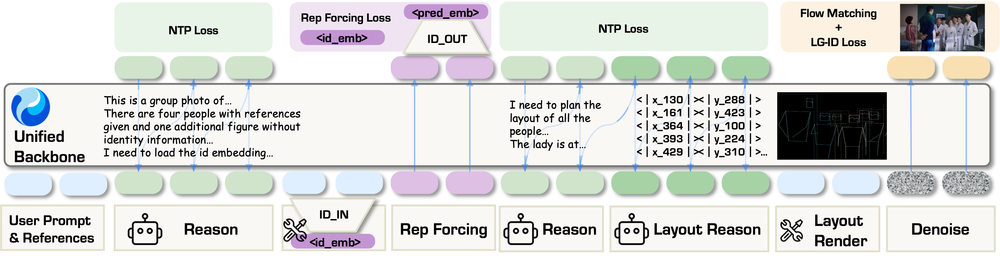

0.614
>
0.566
ArcFace similarity ↑ higher is better
WithEveryone
GPT-Image-2
1Fudan University 2Hunyuan, Tencent 3The University of Hong Kong
01 / Results
ArcFace similarity ↑ higher is better
Copy-paste score ↓ lower is better
Hover to pause a row. Select any image to inspect its identity references and move through the full collection.
64 generated groupsLoading the gallery…
02 / Overview
As a group grows, identity signals compete, face-to-reference correspondence becomes unstable, and one misplaced person can disrupt the whole composition.
WithEveryone treats identities as an addressed set rather than an unordered pool. It reasons about who participates, where each person belongs, and how the group should be composed before synthesis begins.
Identity tokens, structured layout reasoning, and region-grounded supervision share one unified generation context.
03 / Method

Each selected reference is projected into a dedicated ID token, keeping people individually addressable in a long multimodal context.
Layout CoT binds identities to people, face and body regions, and pose keypoints before a deterministic renderer creates the condition.
Layout-Grounded ID Loss reads correspondence from annotated regions, avoiding unstable face matching as the number of identities grows.
04 / Abstract
Identity-preserving generation becomes increasingly unreliable when a scene must contain many specified people.
Beyond retaining each identity, the model must bind every reference to a distinct person and location, while training-time identity losses must establish correspondence among several noisy predicted faces. WithEveryone injects each selected identity as an addressed token, predicts a structured identity–layout plan, and renders that plan as a visual condition.
Layout-Grounded ID Loss supervises intended identities directly in annotated face regions, while ID Representation Forcing trains a prediction for each identity before image synthesis. On an identity-disjoint benchmark, the system improves target-context identity similarity while sharply reducing copy-paste artifacts.
05 / Open-source plan
The research system uses a foundation model whose license does not permit checkpoint release. We are training a new version on an openly releasable foundation model and will share code and weights when it is ready.
Citation
@article{xu2026witheveryone,
title={WithEveryone: Unified Planning and Identity Grounding for Group Image Generation},
author={Xu, Hengyuan and Wang, Qixun and Cheng, Yiji and Yang, Miles and Zhong, Zhao and Cheng, Wei and Ma, Xingjun and Jiang, Yu-Gang},
journal={arXiv preprint arXiv:2608.20336},
year={2026}
}